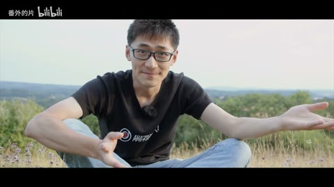

← 案例图谱H50 / 主要视觉研究样本
【影视飓风混剪】无限进步，就是我们的座右铭——给影视飓风的六周年
一个兴趣是做UP主的人 · 7.7万播放快照 · <10万 · B站原作 ↗
新旧口播、器材和旅行素材形成发展回顾。重复品牌片头不等于独立新特效；把注意力放到时间线与人物成长。

约103.480秒 · 案例代表帧从画面里找依据
这一例先看什么
早期人物、器材、旅行、自然与幕后交错形成发展回顾，较长口播与密集自然段落并置。
审美判断
口播小字幕、姓名牌与白底图标层级明确，新旧素材色温/画质仍有差异，作为历史回顾可见。
迁移到自己的题材
纪念混剪、品牌回顾、旅行、纪录短片、情绪随笔、多来源素材的主题表达。
教学提问：两个镜头为什么必须相邻？是共享意象、动作阶段、色彩，还是只是都很好看？
带画面的分析单元
图像标出取样时间，对应观察中的关键状态。单帧不能独立证明运动，连续性请结合摘录。表达作用与应用场景是教学解读，复现路线是建议，不是原作者工程还原。
分析单元 01 / 0—14.12秒
口播重组／留黑／底部字幕
实际观察
不同年代与场地的口播人物、双人对谈，统一宽画幅与小字幕；14秒口播接白色图形品牌段。
表达作用（教学解读）
通过变化与稳定的比例让信息有轻重。视觉密度来自切镜、版式与局部动画三个层面，不只靠刀数。
具体应用场景
所有形式；尤其高潮前的蓄力、解释段的阅读、回忆段的停留和快慢对照。
复现建议（非原作者工程还原）
以语义挑选口播段落并裁切，统一画幅，补字幕；当前只根据可见字幕观察，不评价实际语音句子连接。
直出判断：剪接/字幕容易，口播语义衔接需要真实听审
常见误用：全片等密度；把闪帧当新镜；高切速被当成质量分；没有稳定段供观众理解。
分析单元 02 / 14.12—17.96秒
图标环绕／品牌字揭示／立体字标／碎片
实际观察
白底相机/光圈图标旋转和中央标志，15.32转黑底红碎片白轨迹，15.44挤出字，17.36标志成形，17.96接产品。
表达作用（教学解读）
把阅读顺序变成观看顺序；用字重、位置与停留表达强调、犹豫或压迫。
具体应用场景
观点短片、歌词视觉、人物宣言、章节、情绪高潮；先决定哪些词必须读懂，哪些只是纹理。
复现建议（非原作者工程还原）
矢量图标平铺/旋转，文字遮罩揭示；立体字可挤出网格或多层投影，碎片透视运动。
直出判断：简化图标/字揭示容易，立体字/碎片中等；与五百万混剪约29.6秒片头明显同源，不能算两位粉丝各自制作
常见误用：每个字都弹跳、整句停留不足、所有文字同时争主位。严肃叙事里无理由的回弹会削弱重量。
分析单元 03 / 18—55秒
产品标志叠层／字幕条／现实拍摄穿插
实际观察
设备特写固定白标，之后早期人物、户外拍摄、器材与演播室片段，50秒底部带图标姓名条。
表达作用（教学解读）
让一次画面替换有理由：继续动作、转换观点、给反应，或通过相似形状建立联系。
具体应用场景
动作、对话、运动、情绪混剪、多来源的视觉联系。
复现建议（非原作者工程还原）
多源裁切/构图调整，透明标志和姓名牌，条带位移/淡入；来源人物镜头本身需原素材。
直出判断：固定标与姓名条容易，原摄影和布光依赖素材
常见误用：只匹配颜色不顾动作阶段；方向突变；每次连接都加过渡掩盖问题。
分析单元 04 / 60—84秒
旅行人物／自然摄影／日出地平线
实际观察
雪地人物、山峰、鸟类、龟类及地球日出图景；鸟喙转动等为镜内运动。
表达作用（教学解读）
用运动方向、尺度和密度建立空气、空间或情绪；装饰层应服务焦点。
具体应用场景
回忆、季节、梦幻、寒冷、散场、能量爆发、文本聚散。
复现建议（非原作者工程还原）
按题材和景别排列素材，曲线/白平衡统一；自然摄影和地球素材不应直接归为粉丝VFX。
直出判断：选择连接和调色容易；拍摄内容本身需要素材
常见误用：平均铺满；近远粒子大小与模糊无差别；粒子挡脸；用程序火星冒充纪实拍摄。
分析单元 05 / 103.32—105.24秒
人物—暮色—夜路—人物硬切
实际观察
坐地人物转暮色剪影，再转快速移动夜路，最后转双屏前人物；夜路内大量位置变化是行进运动。
表达作用（教学解读）
让一次画面替换有理由：继续动作、转换观点、给反应，或通过相似形状建立联系。
具体应用场景
动作、对话、运动、情绪混剪、多来源的视觉联系。
复现建议（非原作者工程还原）
短裁切、直接硬切，夜路可选延时/加速素材，具体变速制作路径未独立确定。
直出判断：连接容易，优质夜路摄影与稳定性需要素材
常见误用：只匹配颜色不顾动作阶段；方向突变；每次连接都加过渡掩盖问题。
分析单元 06 / 110—235秒
幕后/风光/团队交错／新旧素材反差
实际观察
城市道路、人物倒地、幕后器材、旅行、雪地、口播、活动观众与自然景观交替；不同原片画质/色温存在差异。
表达作用（教学解读）
利用相邻镜头改变理解，使原来无关的画面形成主题、对比或关系。
具体应用场景
纪念、广告、人物关系重组、旅行随笔、社会观点、品牌回顾。
复现建议（非原作者工程还原）
以叙事线重组素材，用环境/动作段落打断口播；必要时调色、缩放和裁切统一。
直出判断：剪接与基础统一容易；选材逻辑/声音连续性需听审
常见误用：素材只因好看而排列；上下文失真；借剪接制造未经支持的事实判断。
分析单元 07 / 235—262.76秒
大片段口播保留／黑底小字片尾
实际观察
235–250同一白衣人物场景，背景月面投影变化、人物手势持续；255与260黑底小字。
表达作用（教学解读）
通过变化与稳定的比例让信息有轻重。视觉密度来自切镜、版式与局部动画三个层面，不只靠刀数。
具体应用场景
所有形式；尤其高潮前的蓄力、解释段的阅读、回忆段的停留和快慢对照。
复现建议（非原作者工程还原）
保留较长口播并接淡黑/小字片尾；背景视频来自原场景，不凭变化推断UP新合成。
直出判断：淡黑和片尾文字容易，不把背景更新计多刀
常见误用：全片等密度；把闪帧当新镜；高切速被当成质量分；没有稳定段供观众理解。
用连续画面核对
保留原研究的多段局部摘录。片段含音轨不代表已听审；本资料不评价音乐卡点或对白节奏。
短时变化怎样理解
103.3–105.3秒三次，71.5–73.5秒四次；14–18秒三次主段连接，立体字在品牌动画内另记。
把镜头连接、版式更新、局部图层变化和镜内运动分开记录。所查窗口是下限，不是全片平均或AI／人工排名。
原始逐窗记录 →这次练习的约束
用六个不同来源的画面分别按“同动作、同颜色、同主题”排三版，写下每版新增的含义，而不只说顺滑。
先写“我希望观众明白／感到什么”，再选本页的一种手法。完成无效果基础版后再加层；解释新增层带来的收益和代价。
打开练习与复盘表 →来源、观看范围与制作归属
实际检查范围：实际查看53张5秒概览0–260（4表），103.32–105.24和71.52–73.44共50密集帧（4表，实际12.5/s）；14–17.96另34帧（3表，实际约8.33/s、标头请求12/s）。262.7625秒1080p25fps，三段4秒摘录。未听审、未连续完整音画观看。
制作线索：番外的片，第一方7.7万、2020-04-25；作者明确自述看另一UP混剪后制作影视飓风六周年混剪。原团队素材与粉丝再剪接需分开归属。
边界：明确粉丝再剪，原团队摄影和与五百万样本同源品牌片头单列；保留作回顾编排参考，未核口播或配乐衔接。
播放快照保存时间（UTC）：2026-10-20T10:41:37.550668+00:00。H30制作方式为推定；同源改编、仿作和转载依原记录标注。
原始案例记录 · 选样表把你的判断留下来
笔记仅尝试保存在本机浏览器；浏览器策略可能限制本地文件存储，重要内容请导出。
沿着同一问题继续阅读
 H39
H39细节、反应与转折
跨作品素材、演奏细节与光环意象重组开放剧情；区分画面关系的新增与原片已有的光效、表演。
主要样本7个分析单元
 AI47
AI47细节、反应与转折
星空漂浮、舞厅、卡通群岛、玩偶舞台形成不同媒介段落；服装与双人关系作为锚点，场景丰富度不能仅归功剪辑转场。
主要样本7个分析单元
 AI48
AI48细节、反应与转折
武侠幻想与真实宠物的反差，依赖落点和回收。水墨、打斗和日常拖鞋的材质变化，应服务反转而不是各自炫技。
主要样本7个分析单元